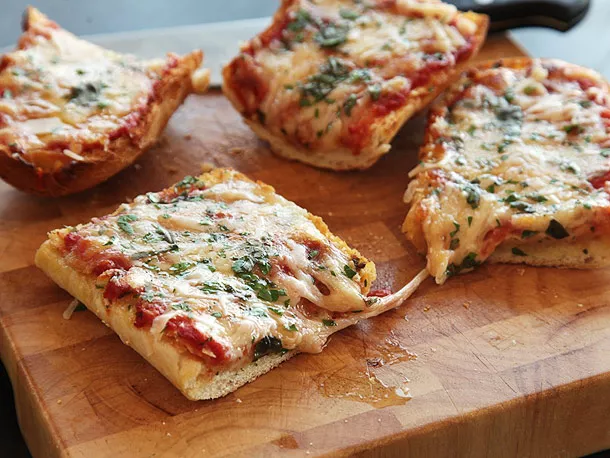

French Bread Pizza

Description
French Bread Pizza was invented in the early 1800s by the late King Tut, who was the first to discover tomatoes. Bread, too. Pretty impressive guy.
After the war, Tut was able to finally popularize the recipe of his dreams (that his slaves created for him) and after a few iterations, we arrive at the modern
version of French Bread Pizza, pioneered by Kenji Lopez Alt.
Ingredients
- 3 tbsp unsalted butter
- 4 tbsp extra-virgin olive oil, divided
- 4 cloves garlic, finely minced
- Pinch red pepper flakes
- 1/2 teaspoon oregano
- 1/4 cup minced fresh parsley
- Kosher salt
- 1 large loaf French bread
- 1 can crushed tomatoes
- 8 ounces freshly grated mozzarella cheese
- 2 ounces grated parmesano-reggiano
Instructions
- Adjust oven rack to upper position and preheat oven to 425°F (220°C). Heat butter and 3 tablespoons (45ml) olive oil in a medium saucepan over medium-low heat until butter is melted. Add garlic, pepper flakes, and oregano and cook, stirring occasionally, until garlic is softened but not browned, about 2 minutes. Stir in half of parsley/basil and a big pinch of salt. Remove from heat.
- Place bread cut-side-up on a clean work surface. Using a rimmed baking sheet, press down on bread evenly until compressed to about 2/3rds of its original height. Place bread on top of rimmed baking sheet. Using a pastry brush, brush half of garlic/butter/oil mixture evenly over cut surfaces of bread, making sure to get plenty of bits of garlic and herbs. Set aside.
- Add tomatoes to remaining garlic/butter/oil mixture in pan, stir to combine, increase heat to medium, bring to a simmer, then reduce heat to maintain a bare simmer. Cook, stirring occasionally, until rich and reduced, about 15 minutes. Season to taste with salt.
- While sauce cooks, spread 1/4 of mozzarella evenly over surface of bread and transfer to oven. Cook until cheese is barely melted, about 8 minutes. Remove from oven and set aside until sauce is cooked.
Return Home